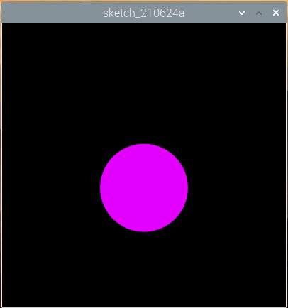
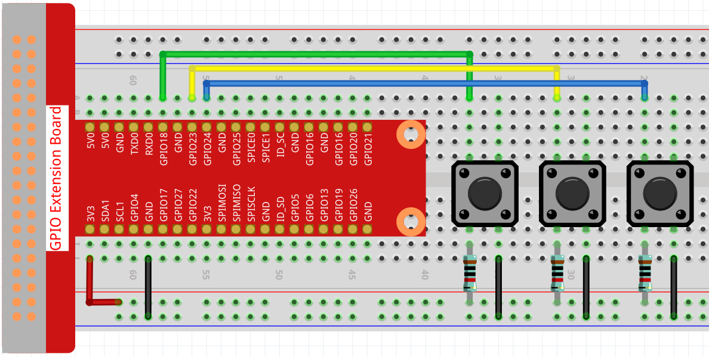

Dot on the Swing¶
In this project, 3 buttons are connected, one to change the size of the dot, one to change the position and the last one to change the color. If you press all 3 buttons at the same time, you will get a dot that is swinging and has a variable color.
Wiring
Sketch
import processing.io.*;
// Define an instance of the Dot object
Dot myDot;
// Define the pins that will be reading button presses
int[] pins = { 18, 23, 24 };
void setup() {
size(400, 400);
// Change the color mode of the sketch to HSB
colorMode(HSB, 360, 100, 100);
noStroke();
for (int i = 0; i < pins.length; i++) {
GPIO.pinMode(pins[i], GPIO.INPUT_PULLUP);
}
// Create a Dot in the middle of the screen
myDot = new Dot(width / 2, height / 2, 100, 255);
}
void draw() {
background(0);
// Modify attributes of the Dot depending on which buttons are pressed
if (GPIO.digitalRead(pins[0]) == GPIO.LOW) {myDot.setSize();}
if (GPIO.digitalRead(pins[1]) == GPIO.LOW) {myDot.setPosition();}
if (GPIO.digitalRead(pins[2]) == GPIO.LOW) {myDot.setColor();}
// Update the Dot state
myDot.update();
// And draw it to the screen
myDot.show();
}
class Dot {
float initX;
float initY;
float currentX;
float currentY;
int positionRange = 60;
float initSize;
float currentSize;
int sizeRange = 50;
int initColor;
int currentColor;
int ColorRange = 80;
float timer = 0.0;
float speed = 0.06;
Dot(float x, float y, float s, int c) {
initX = x;
initY = y;
currentX = x;
currentY = y;
initSize = s;
currentSize = s;
initColor = c;
currentColor = c;
}
void setSize() {
currentSize = initSize + sizeRange * sin( timer );
}
void setPosition() {
currentY = initY + positionRange * cos( timer *2);
}
void setColor() {
currentColor = int(initColor + ColorRange * sin( timer ));
}
void update() {
timer += speed;
}
void show() {
fill(currentColor, 100, 100);
ellipse(currentX, currentY, currentSize, currentSize);
}
}
How it works?
Instead of drawing dot directly, we create a Dot class here.
Then, declare the object (in this case myDot).
This is a simple way to draw dots with multiple identical properties. For example, if we add three functions to the dot in this project - change size, change position and change color - then each dot we declare will have the same function. We can use the same button to make them do the same thing, or we can use different buttons to control each dot separately.
Using classes makes your sketch beautiful, powerful and flexible.
Class (computer programming) - Wikipedia
Next, let’s take a closer look at the Dot class.
Dot(float x, float y, float s, int c)
In the declaration, it needs to pass in four parameters, which are the X and Y coordinate value of the position, the size, and the color (here it is set to the HSB color mode ).
Each parameter will be assigned to 2 sets of values (initial value and current value).
float initX;
float initY;
float currentX;
float currentY;
int positionRange = 60;
float initSize;
float currentSize;
int sizeRange = 50;
int initColor;
int currentColor;
int ColorRange = 80;
In addition to the initial value and the current value, there is also a set of range values. It is not difficult to understand that the initial value is used to determine the initial state of the dot (determined by the incoming parameters), while the current value will change within the range to make the dot move.
Therefore, except for the X coordinate value, the current values of the other three parameters are calculated as follows:
void setSize() {
currentSize = initSize + sizeRange * sin( timer );
}
void setPosition() {
currentY = initY + positionRange * cos( timer *2);
}
void setColor() {
currentColor = int(initColor + ColorRange * sin( timer ));
}
If you are familiar with trigonometric functions, it should not be difficult to understand sine and cosine, which gives a smooth periodic change (from -1 to 1) of the current value of the dot.
We also need to add a seed, timer, for the periodic variation. It adds the fixed value in the method update() and is called in draw().
void update() {
timer += speed;
}
Finally, the dot is displayed according to the current value using the method show(), which is also called in draw().
void show() {
fill(currentColor, 100, 100);
ellipse(currentX, currentY, currentSize, currentSize);
}
What more?
Having mastered the use of classes, you can already draw multiple dots with the same properties, so why not try to do something cooler. For example, how about drawing a stable binary star system, or making a ‘DUET’ game?
For more please refer to Processing Reference.